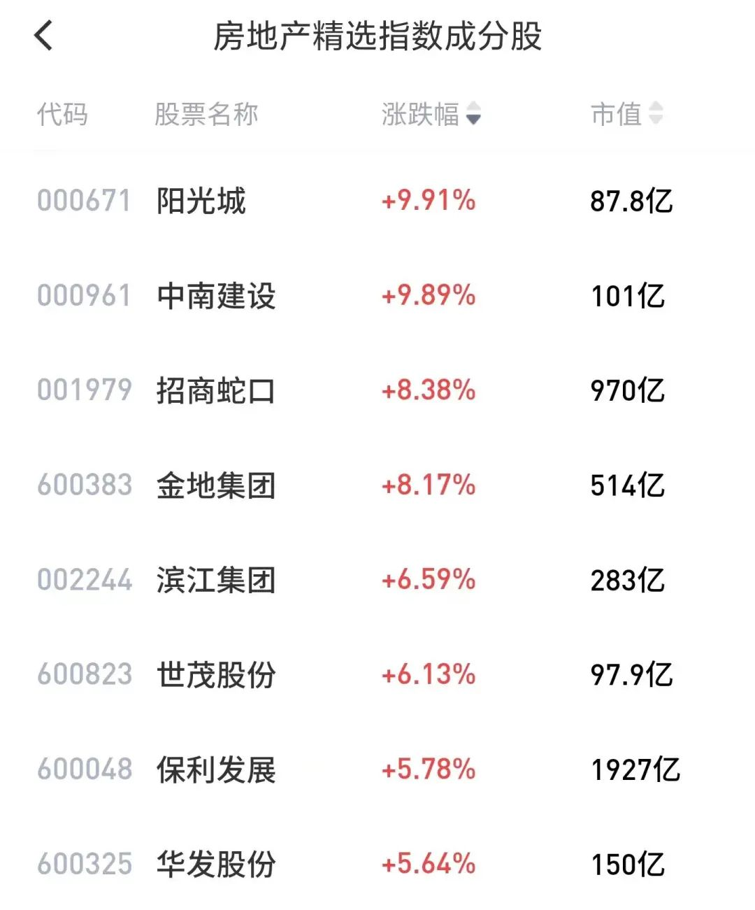
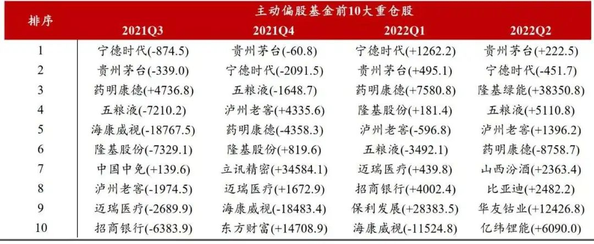
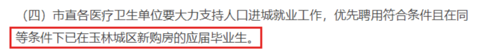
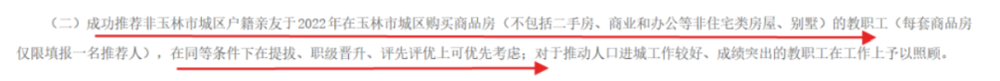
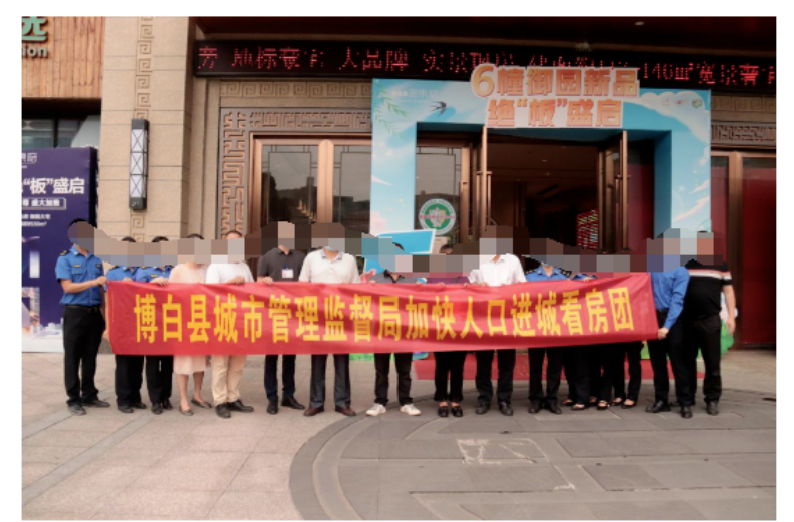
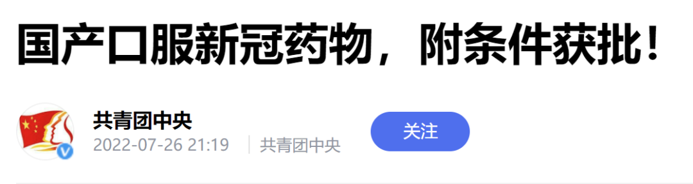
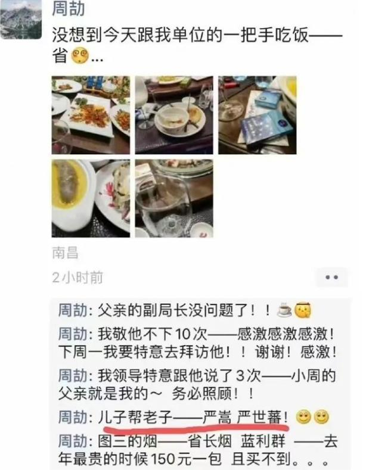

这公司可真不要脸
原创 V姐万事屋 V姐来了 2022-07-27 00:29 发表于上海
原文链接(长) 原文链接(短)
Hi, 我是V姐。
今天市场不错，地产板块又行了。
主要原因是外围有消息说会有神秘资金3000亿来保交楼。目前国内没有官宣，但是市场无疑已经买单了。这钱肯定是救项目，不是救地产公司。烂公司该倒闭还得倒，楼交了，像恒大这种公司该进垃圾堆就进吧。
这流氓公司，最近开了几个高管，这事买了不少通稿，把【让领导先走】演成【大义灭亲】，奥斯卡不给皮带哥真是可惜了。
恒大用子公司恒大物业的134亿存款，给第三方提供贷款担保，第三方拿到钱，把这钱转给了中国恒大。
这属于违法挪用，但是公司不起诉，开了夏海钧等几个高管，以示“惩罚”。
现在恒大这个鬼样子，高管、各地分公司领导是想辞职都跑不了，必须保交楼。夏总一年接近3个亿年薪，说走就走了，回加拿大不得开香槟庆祝顺利脱身。帮老板搞来134个亿，被恒大物业的投资者骂祖宗十八代也值了。
帮老板做脏事，夏总给大家现场表演白手套戏码，还买水军搞得老大挥泪斩马骥一样，真当投资者是傻逼。
还有恒驰这个车，也是一言难尽。
众所周知，我在直播里一再讲我支持国产新能源车，希望这个产业能做大做强，走出去。现在得加个限定语，恒驰除外。
这车到现在又是线上购车节刷数据，又是恒大物业小区天天拉人头推广，但是连辆试驾车都没有。上海销售店铺里的车，显示屏都亮不了的。
拿个空壳子，准备给下游供应商抵工程款，还诱导烂尾业主继续买车。
今日保交楼，明日保交车，套路都给恒大玩明白了。拉越多人下水，自己上岸的可能性就越大，倒逼政府出手，算盘啪啪响。
说点投资的事，基金们公布了二季度持仓，主动偏股基金的前10大重仓股，4个白酒，4个新能源，还有1个光伏的隆基，1个CXO板块的药明康德。

所以基本上思路就是 **新能源进攻，消费打辅助，** 毕竟白酒是消费的急先锋，利润稳定，确定性强。
另外各地楼市被逼急了，开始出一些奇招去化库存，青岛让公务员卖房，还有武汉某区公务员买房，财政借15万无息贷款给你，以后慢慢从工资里扣。
广西玉林，编制优先录取买房的，体制内优先提拔买房的。


还有公务员看房团，拉起横幅拍照的。

除了北上广深四个一线城市，以及少数强二线，其他地方的朋友，今年的主题，不是买房，应该是趁着政策热度卖出多余二手房。除了自住的，没有必要留在手里，今年或许是最后的出货机会。
就算强如杭州，也是一手红盘火，核心资产涨，普通住宅+老破大+老破小二手存量巨大，卖不动。去年四季度到现在，杭州供应了139宗住宅用地，超过1000万方的供应，平均100平/套，就是10万套，整个杭州市场上打新的房票估算也就10万张。
今年杭州还有2次卖地，镰刀已经多于韭菜了。现在杭州二手房市场上，3万以下的刚需购买力接不上，导致5万左右置换也处于断层的阶段。
刚需当然还是可以买，投资客不信邪的可以冲，但我认为今年杭州投资者应该尽量出掉手上普通的二手房。即使打新，红盘+限售的配置，交付3年+限售5年，周期要8年，极大的拉薄了收益，没有必要。
晚上看到新闻，讲国产口服新冠药物阿兹夫定，已经获批了。

根据临床数据，服用阿兹夫定核酸转阴时间为3-4天，平均用药时间为6-7天，平均出院时间为9天。
药是复兴医药跟真实生物合作推出的，今天复兴跌了3%。主要前期股价已经上去了，现在利好落地，要等后面真实的需求数据来支撑才行。辉瑞口服药的市场需求就远不及预期。毕竟如果只是缩短转阴时间，不能预防重症，那么市场买单的程度就要打折扣了。
这款国产药从三期临床数据出来到获批，只用了10天。或许它更大的作用，是扭转大家的预期，有药可以治，那么生病了似乎就没那么可怕，也为后面政策的拐点打伏笔。
* * *
最近那个江西官二代炫富的朋友圈大家看了嘛？
随便贴一个，就是这样的：

这货隔三差五就炫耀，什么20万一斤的茶叶啦，欧米茄手表啦，南昌别墅啦，跟市长儿子吃饭啦（那个市长已经进去了）。。。
还严嵩严世藩，儿子帮老子。说实话，严世藩因为嚣张浅薄，可没少坑老子。
哦对了，最后严世藩被砍头，严嵩被没收所有家财，2年后贫病交加而死。